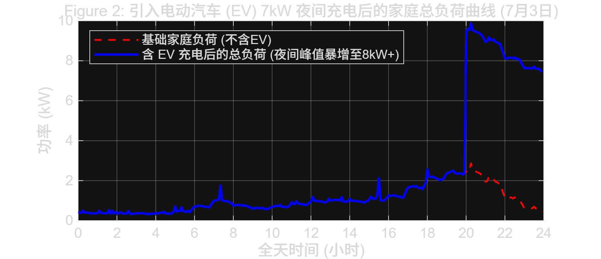
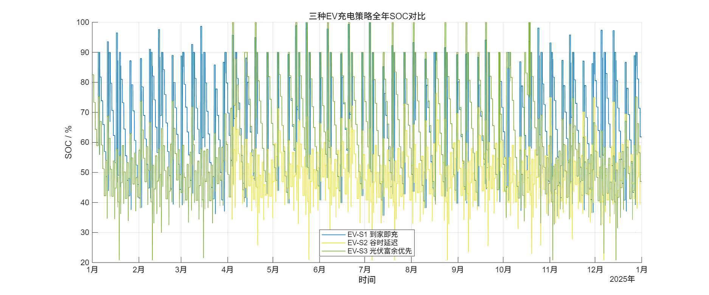
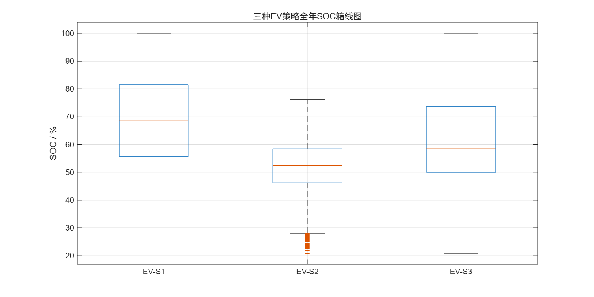

A
统一口径参数、电价、指标、报告主线B
负荷与光伏全年基础负荷、PV 矩阵、统计图C
EV 建模SOC、出行、三种充电策略D
储能选型容量/功率扫描、成本、寿命E
策略优化峰谷、预测、机器学习尝试7
综合结论四个问题、条件化推荐最终结论不写成“绝对最优”，而是按不同目标给出条件化推荐。
04 / 任务二


05 / 任务三


06 / 关键矛盾

07 / 任务四


08 / EV 充电策略


11 / 容量影响


13 / 功率影响


16 / 策略图表


18 / 预测与运行


Appendix A

Appendix B


Appendix C



Appendix D


Appendix E


Appendix F